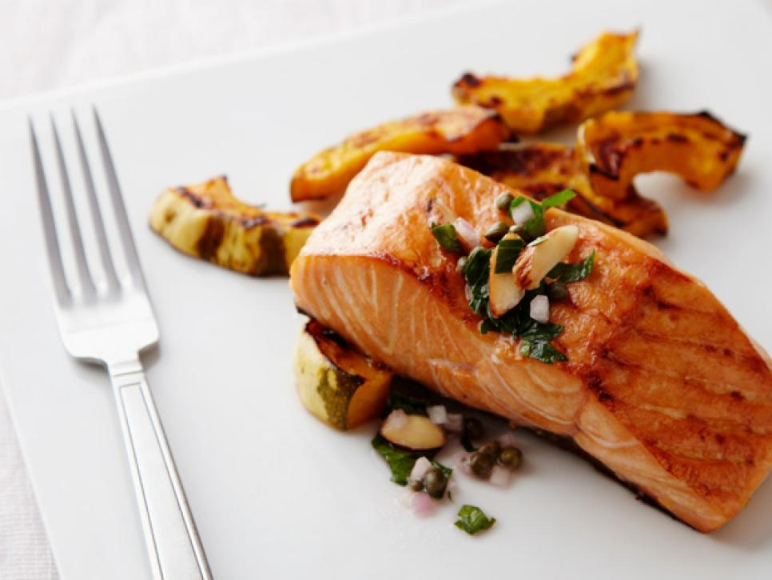
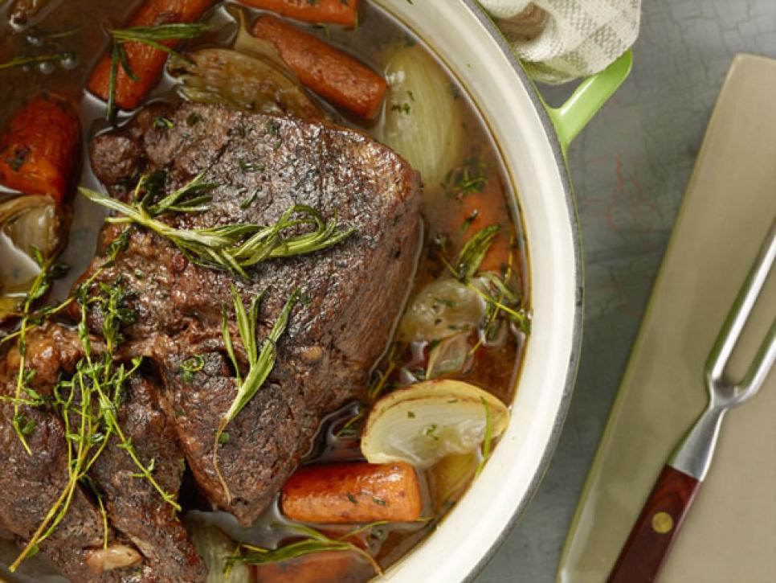

Here is a list of our most popular dishes for any kitchen.
Pasta with Cherry Tomato Sauce

- Boil Water and add a pinch of salt
- Add pasta and follow cooking directions
- Heat Garlic and 60ml of olive oil in a skillet for 3 minutes
- Cook until sauce is creamy
- When pasta is cooked, add sauce
- Serve with a dash of parmesan.
Butternut Squash Pasta
- Heat olive oil on very high heat for about 3 minutes before adding squash, salt and pepper
Combine sauce and pasta into a pan with room temp water and bring to a boil for about 5 minutes
Mix into a skillet with some pasta water and stir in a cheese of your choice
Mango Chicken with Vegetables
Season Chicken with Pepper and Mango Chutney
Place chicken onto a baking sheet with 1 tbsp. of olive oil and a pinch of salt
Add vegtables to baking sheet
Bake until cooked thoroughly
Fried Chicken and Rice
- Heat 1 tbsp. of oil in a wok or skillet.
- Add chicken, pepper, garlic and ginger and wait 2 minutes.
- Add broccoli and wait another 3 minutes.
- Add another 3 tbsp of oil and add rice along with a raw egg.
Carolina Style Sloppy Joe
- Preheat grill to 400 degrees.
- Mix mayonnaise, sour cream, apple cider vinegar, salt and pepper into a bowl.
- Combine ground sitloin and steak sauce and grill till cooked.
- Combine mix from bowl and serve.
Oven-Baked Salmon
- Preheat oven to 450 degrees F.
- Season salmon with salt and pepper.
- Place salmon, skin side down in a non-stick pan or baking sheet.
- Cook for about 12 to 15 min, until fully cooked.
- Serve with delicious cashew salad.
Pot Roast
- Preheat oven to 275 degrees F.
- Add olive oil. Brown onions and carrots, set aside.
- Sear roast and set aside.
- Add red wine or beef broth along with roast.
- Add cooked onions, carrots, and herbs, and cook for 3 to 5 hours.
Chicken Enchiladas
- Season chicken and brown over medium heat. Set aside.
- Saute onion and garlic in drippings. Add canned tomatoes.
- Add shredded chicken and microwave tortillas for 30 sec.
- Fill tortilla with mixture and bake in 350 degrees F for 15 min.
Spinach Artichoke Dip

- Preheat oven to 350 degrees F.
- Combine sour cream, pepper, garlic, artichoke hearts, spinach, cream mozzarella cheese.
- Top with mozzarella cheese and parmesan.
- Put in oven for 30 min or until bubbly.
Pumpkin Pie
- Preheat oven to 425 degrees F.
- Combine sugar, salt, cinnamon, ginger, and cloves. Beat eggs.
- Stir in pumpkin, sugar-spice mixture, and evaporated milk.
- Pour into pie shell and bake for 15 min.
- Reduce heat to 350 degrees F and bake for 40 to 50 min.